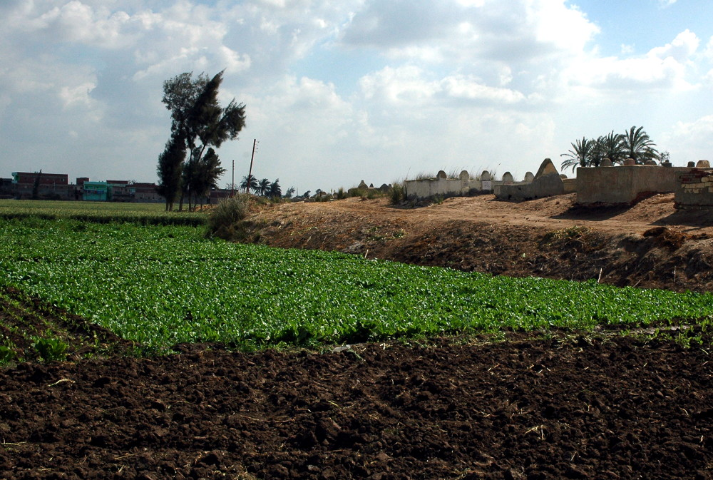

Avaris (Tell el-Dab'a)

- Find Name
- Avaris (Tell el-Dab'a)
- Historical Period
- Middle Kingdom
- Artifact Date
- c. 1650–1550 BC (Hyksos capital)
- Date Discovered
- 1966–present (excavated)
- Discovery Location
- Tell el-Dab'a, Nile Delta, Egypt
- Current Location
- In situ, Nile Delta, Egypt
- Timeline Era
- Exodus and Wilderness
- Description
- The excavated Hyksos capital in the Goshen region of the Nile Delta, uncovered by Manfred Bietak, with palaces, temples, and striking Minoan-style frescoes. As the seat of the foreign rulers of northern Egypt in the centuries before the Exodus period, it illuminates the Egyptian world Israel lived in. Its connection to Joseph or to the Exodus itself is background context only, not proof of Joseph, and the entry claims no more.
- Biblical Significance
- Avaris shows that foreigners did rule Egypt from the Delta, in the very region where Genesis places Israel. It makes the Joseph story's setting plausible without proving its details — the right use of archaeology, which can open a door without forcing a reader through it.
- Evidence Class
- Contextual
- Interpretations
- Scholars agree Avaris was the Hyksos capital at Tell el-Dab'a; its relation to the Joseph and Exodus narratives is contextual background, and no excavated evidence there names Joseph or Israel's sojourn.
- Scripture Illuminated
- Related Books
- Related Places
Awaiting Review Not yet checked against scholarly sources. Treat its claims as provisional until this entry is reviewed. About verification
Last reviewed: not yet reviewed